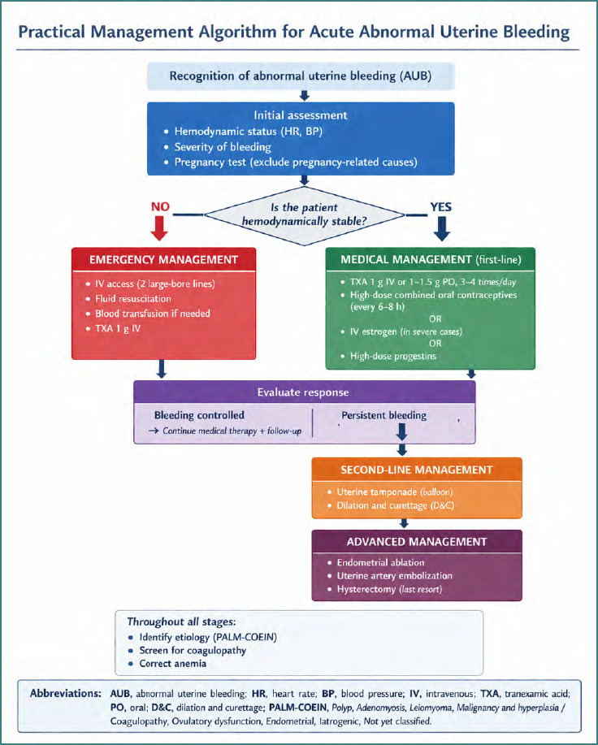

Аномальные маточные кровотечения: ургентная помощь при кровотечениях, обусловленных овуляторной дисфункцией. Профилактика повторных кровотечений
Аномальные маточные кровотечения при овуляторной дисфункции: место в PALM-COEIN
Маточное кровотечение — это симптом, а не диагноз. Лечить его правильно можно только тогда, когда понятно, откуда оно берётся. Именно для этого и создана классификация PALM-COEIN — международная система, которая раскладывает все причины аномальных маточных кровотечений (АМК) по восьми категориям. АМК — это кровотечения, чрезмерные по длительности (более 8 дней), объёму кровопотери (более 80 мл) и/или частоте (менее 24 дней между эпизодами). Классификация принята FIGO.[лекция, с. 6]
Все восемь категорий делятся на две большие группы. Первая — структурные причины: те, что можно увидеть при осмотре или на УЗИ. Вторая — неструктурные: те, которые не оставляют никакого видимого анатомического следа. Это разделение принципиально, потому что тактика при структурной и неструктурной причине различается кардинально.[лекция, с. 6]
Посмотрите на классификацию в таблице ниже — она показывает, где именно среди восьми категорий стоит категория O и чем она отличается от соседей.
| Буква | Категория | Краткое определение |
|---|---|---|
| P | Polyp — Полип | Полипы эндометрия или эндоцервикса |
| A | Adenomyosis — Аденомиоз | Врастание эндометрия в миометрий |
| L | Leiomyoma — Лейомиома | Миома матки (субмукозная, интрамуральная, субсерозная) |
| M | Malignancy & hyperplasia — Малигнизация и гиперплазия | Гиперплазия и рак эндометрия, другие злокачественные опухоли |
| C | Coagulopathy — Коагулопатия | Нарушения свёртывания крови (болезнь Виллебранда и др.) |
| O | Ovulatory dysfunction — Овуляторная дисфункция | АМК вследствие нарушения овуляции при отсутствии органической патологии |
| E | Endometrial — Эндометриальная | Первичное нарушение функции эндометрия (диагноз исключения) |
| I | Iatrogenic — Ятрогенная | Кровотечение, вызванное лекарствами или процедурами |
| N | Not yet classified — Неклассифицированная | Редкие или недостаточно изученные причины |
Из таблицы хорошо видна логика системы. Первые четыре категории — PALM — это структурная патология: полипы, аденомиоз, лейомиома, гиперплазия и рак. Их объединяет одно: причину можно увидеть — на УЗИ, при гистероскопии, в биоптате. Четыре следующих — COEIN — это неструктурные причины. У коагулопатии, эндометриальной дисфункции и ятрогении есть свой конкретный механизм. А категория O стоит особняком.
АМК-O — аномальное маточное кровотечение вследствие овуляторной дисфункции, то есть расстройства процесса овуляции, при котором нарушается нормальное чередование эстрогенной и прогестероновой фаз цикла. Это самый широкий и клинически пёстрый круг нарушений среди всех неструктурных категорий. Органического субстрата нет — есть гормональный сбой, а эндометрий просто отвечает на него избыточным кровотечением.
Диагноз АМК-O — диагноз исключения. Его ставят после того, как последовательно отвергнуты все категории PALM. Сначала УЗИ убирает миому и полипы. Затем биопсия или выскабливание исключают гиперплазию и рак. Гистероскопия закрывает вопрос об аденомиозе и субмукозных узлах. Только когда структурный субстрат не найден, а кровотечение продолжается, формулируется категория O.
Критерии овуляторной дисфункции как причины кровотечения — это признаки нарушенного цикла. Нерегулярные, непрогнозируемые, часто длительные и обильные кровянистые выделения, нередко возникающие после задержек менструаций. Дефицит прогестерона при избыточной секреции эстрогенов. Отсутствие или неполноценность овуляции по данным тестов функциональной диагностики и УЗИ.[лекция, с. 6]
Один из ключевых вариантов — персистенция фолликула. Фолликул не лопается, продолжает секретировать эстрогены и вызывает гиперплазию эндометрия, которая рано или поздно заканчивается кровотечением. При атрезии фолликулов картина другая: уровень эстрогенов падает, и кровотечение носит иной характер — не столько обильное, сколько длительное и упорное.[лекция, с. 6]
Типичный клинический портрет пациентки с АМК-O складывается из нескольких черт. Чаще всего это женщина в периоде становления цикла — подростковый возраст — или в пременопаузе. Оба периода объединяет одно: связь «гипоталамус — гипофиз — яичник» работает нестабильно, и именно поэтому овуляция срывается. Цикл нерегулярен: задержки сменяются затяжными кровотечениями. При осмотре и УЗИ органической находки нет, болевой синдром не выражен или отсутствует.[Савельева, с. 84]
При длительном и обильном кровотечении нарастает анемия, и здесь важно удерживать в голове два пороговых значения. Уровень гемоглобина выше 100 г/л и гематокрит выше 30% при отсутствии гиперплазии эндометрия по УЗИ — это диапазон, в котором допустима симптоматическая гемостатическая терапия без операции. Уровень гемоглобина ниже 70 г/л и гематокрит ниже 20% — это уже другая ситуация, при которой показан хирургический гемостаз. Понимание этого диапазона — от умеренного кровотечения до жизнеугрожающей кровопотери — определяет всю дальнейшую тактику ведения.[Савельева, с. 84]
Показания к госпитализации
АМК-О на первый взгляд выглядит как «просто обильная менструация» — и именно эта видимость нормальности делает решение о госпитализации по-настоящему сложным. Врачу нужно чётко понимать, где заканчивается амбулаторное наблюдение и начинается стационар. Здесь надёжнее любых общих слов работают два ориентира: лабораторные пороги и клиническая картина гемодинамики.
Национальное руководство формулирует показания к госпитализации коротко: обильное кровотечение со сгустками и признаки постгеморрагической анемии — то есть снижения уровня гемоглобина, которое развилось из-за острой или хронической кровопотери. Оба критерия требуют разбора.[Савельева, с. 309]
Начнём с клинического маркера. Появление сгустков в выделениях — не просто косметический признак. Сгустки образуются тогда, когда скорость кровотечения превышает способность локальных коагуляционных механизмов растворить фибрин прямо в полости матки. Иными словами, сгустки — свидетельство того, что кровопотеря идёт быстрее, чем организм успевает её компенсировать. Такое кровотечение не остановить амбулаторно назначенным гемостатиком.
Второй ориентир — состояние гемодинамики. Гемодинамическая нестабильность — это нарушение поддержания нормального артериального давления и сердечного выброса из-за потери объёма циркулирующей крови. На практике она проявляется тахикардией, падением АД, головокружением и слабостью при смене положения тела. Появление хотя бы одного из этих признаков — абсолютное показание к госпитализации вне зависимости от значений гемоглобина в этот момент. Гемодинамика не ждёт результатов анализа крови.
Лабораторные пороги уточняют, что делать дальше уже внутри стационара. При уровне гемоглобина ниже 70 г/л и гематокрите ниже 20% показана операция — раздельное диагностическое выскабливание под контролем гистероскопии. Если ситуация ещё тяжелее — уровень Hb ниже 70 г/л в сочетании с гематокритом ниже 25% — переходят к трансфузии компонентов крови: свежезамороженной плазмы и эритроцитной массы. Без этих числовых порогов решение о переливании крови пришлось бы принимать «на глаз» — с неизбежным запозданием у одних пациенток и избыточным вмешательством у других.[Савельева, с. 84]
Степень тяжести постгеморрагической анемии определяет и объём терапии, и срочность госпитализации. Об этом — в разделе «Аномальные маточные кровотечения при овуляторной дисфункции: место в PALM-COEIN». Средняя и тяжёлая степени требуют стационарного лечения и решения вопроса о гормональном или хирургическом гемостазе. Критически тяжёлая — гемоглобин ниже 70 г/л, гематокрит ниже 25% — в крайнем случае требует переливания компонентов крови.[Савельева, с. 84]
Сводная таблица ниже собирает все эти пороги в одном месте и сразу показывает, какой уровень помощи соответствует каждому клиническому признаку.
| Клинический признак | Пороговое значение | Уровень помощи |
|---|---|---|
| Обильное кровотечение со сгустками | Наличие сгустков в выделениях | Госпитализация |
| Гемодинамическая нестабильность (тахикардия, гипотония, головокружение) | Любые признаки нарушения гемодинамики | Экстренная госпитализация |
| Постгеморрагическая анемия лёгкой степени | Hb > 100 г/л, гематокрит > 30% | Амбулаторно: симптоматическая гемостатическая терапия |
| Постгеморрагическая анемия средней / тяжёлой степени | Hb < 70 г/л, гематокрит < 20% | Госпитализация: хирургический гемостаз |
| Постгеморрагическая анемия критической степени | Hb < 70 г/л, гематокрит < 25% | Госпитализация: трансфузия компонентов крови |
Из таблицы видно: ключевое различие — не между «госпитализировать» и «не госпитализировать», а между уровнями помощи внутри стационара. Сгустки и любой признак гемодинамической нестабильности — это вход в стационар. Дальше лабораторные пороги определяют маршрут: консервативное лечение, хирургический гемостаз или трансфузия. Пациентка с гемоглобином выше 100 г/л и стабильной гемодинамикой — единственная, кому допустима амбулаторная тактика. Всем остальным место в стационаре, а промедление здесь напрямую конвертируется в глубину анемии.[Савельева, с. 83]
Главный вывод раздела: показание к госпитализации при АМК-О возникает при обильном кровотечении со сгустками, любых признаках гемодинамической нестабильности, а также при уровне гемоглобина ниже 70 г/л — независимо от того, сохранена гемодинамика или нет.[Савельева, с. 84]
Выбор метода гемостаза: алгоритм
Остановить кровотечение можно двумя путями. Первый — консервативный гемостаз: медикаментозная остановка кровотечения без каких-либо инструментов в полости матки. Второй — хирургический гемостаз: механическое удаление кровоточащего эндометрия путём выскабливания. Выбор между ними определяется тремя последовательными шагами. Пропуск любого из них ведёт к неверному решению, поэтому порядок жёсткий.

Шаг 1: гемодинамика и степень анемии. Первым делом оценивают состояние кровообращения и уровень гемоглобина. Стабильная гемодинамика и гемоглобин выше 100 г/л дают время на гормональный гемостаз — операция пока не нужна. Как только гемоглобин опускается ниже 70 г/л, а гематокрит — ниже 20%, ситуация меняется принципиально. К этому моменту, как правило, уже есть слабость, головокружение и симптомы гиповолемии, и консервативная тактика просто не успеет остановить кровопотерю в приемлемые сроки. Если гемоглобин падает ещё ниже — ниже 70 г/л при гематокрите ниже 25% — к хирургическому гемостазу добавляют трансфузию компонентов крови: свежезамороженной плазмы и эритроцитной массы. Гемодинамическая нестабильность — это безусловный переход к хирургическому пути вне зависимости от того, что покажет следующий шаг.[Савельева, с. 84]
Шаг 2: толщина эндометрия по данным УЗИ. Если гемодинамика стабильна, следующее решение принимает ультразвук. Пороговое значение толщины эндометрия — М-эхо — показывает, есть ли риск гиперплазии или структурной патологии, которую нельзя пропустить. При утолщённом эндометрии, особенно у пациенток с признаками длительной гиперэстрогении на фоне овуляторной дисфункции, гормональный гемостаз допустим лишь после того, как исключены органические причины: полипы, гиперплазия с атипией, карцинома. На схеме ниже хорошо видно, как ветвление алгоритма уже на втором шаге разделяет пациенток по данным УЗИ — левая ветвь ведёт к медикаментозному лечению, правая сразу к инструментальному.
На схеме изображено дерево решений при остром АМК из зарубежного обзора. Точка ветвления находится после оценки гемодинамики: именно здесь данные УЗИ направляют пациентку либо к консервативному, либо к хирургическому пути. Это не отечественный протокол, поэтому пороговые значения могут незначительно отличаться от принятых в российских рекомендациях, однако логика шагов совпадает.
Шаг 3: консервативный или хирургический путь. Если гемодинамика стабильна и по УЗИ нет признаков структурной патологии, начинают гормональный гемостаз. У молодых пациенток — 18–30 лет — с умеренным кровотечением и без признаков постгеморрагической анемии применяют монофазные КОК с содержанием эстрогенного компонента 0,03 мг. Это условие принципиально: гормональный гемостаз проводят только при удовлетворительных и стабильных гемодинамических показателях.
Хирургический гемостаз — раздельное диагностическое выскабливание под контролем гистероскопии с обязательным гистологическим исследованием соскоба — показан в трёх ситуациях. Первая: уровень Hb ниже 70 г/л при гематокрите ниже 20%. Вторая: если есть ультразвуковые или клинические признаки полипов эндометрия. Третья: медикаментозное лечение оказалось неэффективным. Соскоб здесь несёт двойную нагрузку: останавливает кровотечение и одновременно даёт материал для диагноза.[Савельева, с. 309]
Отдельный случай — пациентки с интактной девственной плевой. Перед инструментальным вмешательством плеву обкалывают 0,25% раствором прокаина с 64 ЕД гиалуронидазы, иначе возможны разрывы. Этот технический момент нередко упускают, а при ювенильных кровотечениях он важен.[Савельева, с. 84]
Главный вывод раздела: алгоритм движется сверху вниз — сначала гемодинамика, потом УЗИ, потом выбор метода. Переход к выскабливанию обоснован при гемоглобине ниже 70 г/л и гематокрите ниже 20%, при гемодинамической нестабильности, при признаках органической патологии по УЗИ или при доказанной неэффективности консервативной терапии. Противопоказания к гормонам — тромбозы, печёночная недостаточность, гормонозависимые опухоли — также сразу переводят пациентку на хирургический путь, минуя шаг 3.[Савельева, с. 84]
Транексамовая кислота: негормональный гемостаз
Эндометрий при АМК-O — это ткань, в которой нарушен баланс между свёртыванием крови и растворением тромбов. Фибринолиз, то есть процесс растворения сгустков, в сосудах эндометрия усилен: тромбы, которые должны останавливать кровотечение, разрушаются быстрее, чем успевают сформироваться. Именно в этой точке работает транексамовая кислота — синтетическое производное лизина. По механизму действия она ингибитор фибринолиза, то есть вещество, которое блокирует растворение уже образовавшихся тромбов.
Чтобы понять, как именно это происходит, нужна одна ключевая молекула — плазминоген. Это неактивный предшественник фермента плазмина. Плазмин расщепляет фибрин, из которого построен тромб: стоит плазминогену активироваться — и сгусток буквально разбирается на части. Транексамовая кислота конкурентно связывается с лизин-связывающими участками плазминогена и не даёт ему прикрепиться к фибрину. Без этого прикрепления плазминоген не переходит в плазмин. Фибрин остаётся нетронутым, и тромб в сосудах эндометрия держится достаточно долго, чтобы кровотечение прекратилось.
Представьте застёжку-молнию. Зубья — это участки плазминогена, замок — место его прикрепления к фибрину. Транексамовая кислота встаёт между замком и зубьями и не даёт им сцепиться. Молния не застёгивается — и фибрин остаётся целым. Через одну эту точку приложения препарат удерживает гемостаз там, где гормональная терапия ещё не успела подействовать.
Схема дозирования при АМК проста. Транексамовую кислоту назначают внутрь только в дни обильного кровотечения. Ограничение по длительности не произвольное: более продолжительный непрерывный приём увеличивает тромботический риск без дополнительного выигрыша в гемостазе.[лекция]
Оценить эффект можно уже через 24–48 часов от начала лечения. Ориентиров три, и все практические: прокладка перестаёт промокать насквозь за час и менее; число использованных прокладок за сутки снижается не менее чем вдвое по сравнению с исходным; сгустки в выделениях уменьшаются в объёме или исчезают. Если через 48 часов ни один из этих критериев не выполнен — продолжать монотерапию транексамовой кислотой нецелесообразно. Решение смещается в сторону гормонального гемостаза, а при гемоглобине ниже 70 г/л и гематокрите ниже 20% — хирургического.[Савельева, с. 84]
Противопоказания делятся на абсолютные и относительные. Абсолютные — тромбоз глубоких вен, тромбоэмболия лёгочной артерии или их эпизод в анамнезе, тяжёлая почечная недостаточность (препарат выводится почками и накапливается при их недостаточной работе), повышенная чувствительность к препарату. Относительные — гематурия и одновременный приём комбинированных оральных контрацептивов. Гематурия — особый случай: транексамовая кислота способна фиксировать тромб прямо в мочеточнике и вызвать его закупорку, то есть обструкцию. Сочетание с КОК, в свою очередь, усиливает тромботический риск.
Нежелательные эффекты чаще всего желудочно-кишечные: тошнота, диарея, боль в животе. Они дозозависимы — и, как правило, проходят при снижении разовой дозы или приёме препарата во время еды. Значительно реже встречаются головная боль и нарушения цветового зрения. Последнее — сигнал к немедленной отмене и офтальмологическому контролю, откладывать нельзя. Риск венозного тромбоза при изолированном применении транексамовой кислоты в акушерско-гинекологической практике низкий. Однако у пациенток с исходно высоким коагуляционным потенциалом — ожирение, варикозная болезнь, постельный режим — соотношение пользы и риска стоит взвесить отдельно.
Главное, что следует вынести из этого раздела: транексамовая кислота останавливает кровотечение не через гормоны, а через защиту уже сформировавшегося тромба от преждевременного растворения — и именно поэтому она применима там, где гормональный гемостаз противопоказан или не успел подействовать, при условии отсутствия тромботического анамнеза и сохранной функции почек.
Окситоцин как утеротоник
Среди препаратов, которые усиливают сокращение матки и тем самым механически останавливают кровотечение, центральное место занимает окситоцин — пептидный гормон задней доли гипофиза, применяемый в акушерско-гинекологической практике как синтетический аналог. Препараты, которые вызывают или усиливают сокращение миометрия — мышечной оболочки матки, — объединяют общим названием утеротоники. Окситоцин — наиболее быстродействующий из них.
Механизм прост, хотя на первый взгляд кажется далёким от акушерства. Окситоцин связывается со специфическими оксициноциновыми рецепторами на клетках миометрия — теми, что сопряжены с фосфолипазой С. Рецептор активируется, и из внутриклеточных депо выходит кальций: концентрация Ca²⁺ в цитоплазме миоцита резко возрастает. Миозиновые цепи фосфорилируются, мышечное волокно укорачивается. Матка сокращается — а это сокращение пережимает открытые сосуды эндометрия. Получается механический гемостаз: без какого-либо воздействия на систему свёртывания крови, только мышечным усилием.
Это разграничение принципиально, и вот почему оно важно в практике. Транексамовая кислота, как уже говорилось в разделе о консервативном гемостазе, защищает уже сформировавшийся тромб от лизиса. КОК стабилизируют эндометрий через рецепторы половых гормонов. Окситоцин не делает ни того ни другого — он работает раньше: сдавливает сосуды мышечным усилием ещё до того, как тромб успел полностью созреть. Именно поэтому в схеме консервативного гемостаза при АМК-О окситоцин используют не вместо транексама или КОК, а вместе с ними. Каждый из трёх компонентов закрывает свою точку приложения.
Посмотрим, как это выглядит в практическом решении — три шага без лишних слов.
Шаг первый: что видит врач. Пациентка поступает с обильным кровотечением и сгустками. Гемоглобин — 85 г/л, то есть выше порога 70 г/л, при котором, как уже говорилось в разделе о методах гемостаза, показано раздельное диагностическое выскабливание. Гематокрит — выше 20%. Гемодинамика стабильна. УЗИ не выявляет признаков гиперплазии эндометрия. Оснований для немедленной операции нет.[Савельева, с. 84]
Шаг второй: что врач из этого выводит. Ситуация укладывается в коридор консервативного гемостаза. Уровень гемоглобина выше 100 г/л не достигнут, значит, это не лёгкая степень — здесь уже нужна активная медикаментозная остановка кровотечения. Показан комбинированный подход: транексамовая кислота блокирует фибринолиз, КОК стабилизируют эндометрий, а окситоцин создаёт немедленное мышечное сокращение матки и тем самым уменьшает кровопотерю в первые часы — до того, как гормональный компонент успеет подействовать.[Савельева, с. 309]
Шаг третий: что врач делает дальше. Окситоцин вводят внутривенно капельно. Скорость подбирают так, чтобы матка сокращалась ритмично, без гипертонуса. Продолжительность введения — как правило, не более 2–4 часов в остром периоде: цель достигнута, как только кровопотеря заметно снизилась и миометрий перешёл в устойчивый тонус. Далее эстафету принимают транексам и гормональный компонент схемы.
Ограничения применения окситоцина при АМК — отдельная тема, которую нельзя обойти. У девочек-подростков плотность оксициноциновых рецепторов в миометрии ниже, чем у женщин репродуктивного возраста, а реакция на препарат менее предсказуема: тонус может быть недостаточным или, напротив, избыточным. Это не абсолютное противопоказание, но основание для осторожности и мониторинга.
У женщин с патологией миометрия — субмукозной миомой, аденомиозом, рубцом после кесарева сечения — ситуация другая. Усиленное сокращение матки создаёт неравномерное напряжение стенки: локальный гипертонус в зоне узла или рубца способен спровоцировать боль и, в редких случаях, усиление кровотечения из деформированных сосудов. При таких анатомических условиях окситоцин либо назначают в минимальных дозах под контролем УЗИ, либо заменяют другими утеротониками.
Главное, что следует вынести из этого раздела: окситоцин останавливает кровотечение не через коагуляцию и не через гормоны — он механически пережимает сосуды миометрия сокращением мышцы, и именно поэтому его добавляют к транексаму и КОК, а не вместо них.
Гормональный гемостаз монофазными КОК: схема
Гормональный гемостаз — это остановка маточного кровотечения с помощью половых гормонов. Они действуют на эндометрий напрямую: укрепляют его строму, останавливают десквамацию — отторжение поверхностного слоя — и запускают пролиферацию поверх кровоточащего участка. Метод применяют только при АМК-О, то есть когда органическая патология исключена по данным осмотра и УЗИ, коагулопатий нет, а гемодинамика стабильна.[Савельева, с. 309]
Для гемостаза используют монофазные КОК — комбинированные оральные контрацептивы, в которых каждая таблетка содержит одинаковую дозу эстрогена и гестагена. Двух- и трёхфазные препараты дают меняющийся гормональный фон, а монофазные — ровный и предсказуемый. Именно это и нужно, когда требуется быстро «выровнять» эндометрий. Для гормонального гемостаза применяют препараты с содержанием эстрогенного компонента 0,03 мг — ригевидон, марвелон, фемоден и другие.[Савельева, с. 309]
Схема строится на нагрузочной дозе — дозе, которая в первые сутки превышает стандартную. Её цель — быстро создать в крови такую концентрацию гормона, при которой кровотечение остановится. Для сравнения: стандартный приём КОК — 1 таблетка в сутки, то есть 0,03 мг этинилэстрадиола. Нагрузочная доза — не менее 4 таблеток в первые сутки, в зависимости от интенсивности кровотечения. Одна таблетка даёт эндометрию гормональную поддержку, но не останавливает активное кровотечение — нужен именно резкий скачок концентрации.[Нацруководство, с. 309]
Конкретный алгоритм выглядит так: по 1 таблетке каждые 2 часа — обычно достаточно 6–8 таблеток за первые сутки. Как только кровотечение начинает ослабевать, суточную дозу снижают ступенчато — примерно по половине таблетки в день — до поддерживающей дозы в 1 таблетку в сутки. Эту поддерживающую дозу продолжают до конца условного цикла: первый курс приёма КОК должен быть не короче 21 дня, считая с первого дня гормонального гемостаза.[Савельева, с. 267]
Схема снижения дозы по дням сведена в таблицу ниже — всё существенное разобрано прозой следом.
| Период лечения | Количество таблеток в сутки | Суммарная доза этинилэстрадиола в сутки |
|---|---|---|
| 1-е сутки (нагрузочная доза) | 4 и более, в зависимости от интенсивности кровотечения | 0,12 мг и более (из расчёта 0,03 мг на таблетку) |
| Снижение дозы — по 1–2 таблетки каждые 3 дня до полной остановки кровянистых выделений | постепенно снижается | снижается соответственно |
| После остановки кровотечения — до 21-го дня | 1 (поддерживающая доза) | 0,03 мг |
Снижение идёт ступенчато, а не одномоментно — примерно по полтаблетки в день. В первые сутки пациентка принимает 6–8 таблеток с интервалом в 2 часа: это и есть нагрузочная доза. За несколько часов она создаёт концентрацию эстрогена, при которой эндометрий перестаёт кровоточить. На второй день доза снижается до 4–5 таблеток, на третий — до 3, на четвёртый — до 2. С пятого дня и до конца курса остаётся 1 таблетка в сутки, то есть стандартные 0,03 мг этинилэстрадиола. Этот последний шаг — поддерживающая доза — самый длинный: он занимает бо́льшую часть курса и не позволяет эндометрию вновь начать десквамацию.[Савельева, с. 309]
В первые 5–7 дней приёма толщина эндометрия может временно увеличиться. Это не неудача лечения, а ожидаемая пролиферативная реакция: при продолжении приёма КОК она регрессирует без кровотечения. Критерий эффективности гемостаза — значимое ослабление или полная остановка кровотечения в течение первых суток от начала нагрузочной дозы. Если к исходу 24–48 часов этого не произошло, продолжать гормональный гемостаз нецелесообразно — тогда встаёт вопрос о раздельном диагностическом выскабливании, показания к которому определяются уровнем Hb ниже 70 г/л и гематокритом ниже 20%.[Савельева, с. 267]
После завершения 21-дневного курса наступают менструальноподобные выделения — умеренные, заканчивающиеся в течение 5–6 дней. Это не рецидив кровотечения, а управляемая отмена. Она подтверждает, что эндометрий стабилизирован и реагирует на гормональный фон предсказуемо.[Савельева, с. 309]
Противопоказания к гормональному гемостазу
Гормональный гемостаз — мощный инструмент, но избирательный. Обильное кровотечение и плохое самочувствие пациентки создают соблазн дать гормоны немедленно, любой ценой. На деле у части женщин монофазные КОК способны не помочь, а навредить — и тогда решение «подождать и попробовать» превращается в опасную ошибку.
Противопоказания делятся на две группы — абсолютные и относительные, — и разница между ними принципиальна не по названию, а по тому, что врач делает дальше. Абсолютные закрывают гормональный гемостаз полностью. Относительные создают зону клинического суждения, где решение зависит от конкретной пациентки.
| Группа | Состояние | Тактика |
|---|---|---|
| Абсолютные | Коагулопатия (врождённая или приобретённая); тромбоз глубоких вен или тромбоэмболия в анамнезе | Хирургический гемостаз; при жизнеугрожающем кровотечении — конъюгированные эстрогены в/в |
| Относительные | Артериальная гипертония; мигрень с аурой; курение у женщин старше 35 лет | Индивидуальная оценка риска; при невозможности назначения КОК — переход к хирургическому гемостазу или альтернативным методам |
Начнём с абсолютных. Первое — коагулопатия, то есть нарушение свёртывающей системы крови врождённого или приобретённого характера. Сюда относятся дефицит факторов свёртывания — в частности, недостаточность VIII и X факторов, носящая семейный характер, — а также тромбоцитарные дисфункции. Смысл запрета прямой: эстрогенный компонент КОК усиливает коагуляционный потенциал крови, и у пациентки с исходно нарушенной системой гемостаза это непредсказуемо сдвигает баланс — либо в сторону тромбоза, либо, как ни странно, к парадоксальному усилению кровотечения.
Второе абсолютное противопоказание — тромбоз глубоких вен или тромбоэмболия лёгочной артерии в анамнезе. Риск повторного тромбоза на фоне эстрогенов попросту неприемлем.
Если есть коагулопатия, выбор метода гемостаза смещается в сторону операции — раздельного диагностического выскабливания. Порог для этого решения — гемоглобин ниже 70 г/л при гематокрите ниже 20%. Если же кровотечение угрожает жизни, а операция невозможна немедленно, в ход идёт экстренная альтернатива.[Савельева, с. 84]
Эта альтернатива — конъюгированные эстрогены, то есть смесь эстрогенных соединений, получаемых путём химической конъюгации и обладающих высокой биодоступностью при внутривенном введении. У девочек-подростков (ювенильные кровотечения) при жизнеугрожающем кровотечении их вводят внутривенно в дозе 25 мг каждые 4–6 ч до полной остановки — при условии, что она наступает в течение первых суток. Когда внутривенная форма недоступна, переходят на таблетированную: 0,625–3,75 мг каждые 4–6 ч с постепенным снижением дозы в течение 3 дней до 1 таблетки в сутки. После остановки кровотечения обязательно назначают прогестагены. Конъюгированные эстрогены — это экстренный манёвр, а не замена полноценному лечению.[Нацруководство, с. 266–267]
Теперь об относительных противопоказаниях. Их три, и у каждого своя логика.
Артериальная гипертония повышает риск инсульта на фоне эстрогенов — сосуды и без того работают под избыточным давлением, а эстроген добавляет протромботический фон. Мигрень с аурой — маркер церебральной сосудистой уязвимости, и её сочетание с эстрогенсодержащими препаратами многократно увеличивает тот же риск. Курение у женщин старше 35 лет действует иначе: никотин самостоятельно нагружает сердечно-сосудистую систему, а вместе с эстрогеном создаётся протромботический фон, который при длительном приёме КОК становится клинически значимым.
Ни одно из этих трёх состояний не является жёстким запретом само по себе. Однако каждое требует, чтобы врач явно взвесил соотношение риска и пользы — и зафиксировал это решение, а не принял его молча.
Если относительное противопоказание перевешивает, тактика та же, что при абсолютном: переход к хирургическому гемостазу. Гормональный гемостаз применяют только тогда, когда органическая патология исключена, гемодинамика стабильна — и когда противопоказаний нет. Если хотя бы одно из этих условий не выполнено, монофазные КОК для остановки кровотечения не назначают.
Коагулопатия или тромбоз в анамнезе закрывают гормональный гемостаз полностью. Гипертония, мигрень с аурой и курение после 35 лет требуют индивидуальной оценки — и при неблагоприятном балансе также ведут к операции или к внутривенному введению конъюгированных эстрогенов при жизнеугрожающем кровотечении.
Хирургический гемостаз: выскабливание матки
Консервативная терапия останавливает АМК в большинстве случаев — но не во всех. Когда гормональный гемостаз не даёт эффекта за 24–48 часов или когда УЗИ обнаруживает патологию эндометрия — полип, неравномерное утолщение, неоднородную структуру, — на первый план выходит операция. Она называется раздельное диагностическое выскабливание, сокращённо РДВ. Суть в том, что врач последовательно выскабливает сначала цервикальный канал, затем полость матки, а соскоб из каждого отдела собирает отдельно. Именно раздельность здесь принципиальна: если смешать материал из обоих отделов, уже не разобрать, откуда исходит патологический процесс.
Показания к РДВ определены чётко. Первое — обильное кровотечение с признаками анемизации: уровень гемоглобина ниже 70 г/л при гематокрите ниже 20%. Второе — отсутствие эффекта от консервативной терапии. Третье — клинические или ультразвуковые признаки полипоза эндометрия, подозрение на нарушенную беременность. Четвёртое — принадлежность пациентки к группе риска по раку эндометрия: ожирение, артериальная гипертензия, сахарный диабет.[Айламазян, с. 119]
Не будь возможности выскабливания, при жизнеугрожающем кровотечении на фоне тяжёлой анемии пришлось бы действовать вслепую — без морфологического диагноза и без надёжного механического гемостаза одновременно. Именно в этом ценность РДВ: одна операция решает сразу две задачи.[Айламазян, с. 119]
Техника операции строго последовательна. После расширения цервикального канала кюреткой выскабливают его слизистую — полученный материал сразу помещают в отдельный контейнер. Затем, не смешивая инструменты, переходят к полости матки. Операцию выполняют под контролем гистероскопии, то есть с прямым визуальным контролем через камеру. Это исключает пропуск патологического участка и снижает риск перфорации. После выскабливания вводят сокращающие средства — окситоцин и метилэргометрин. Они усиливают тонус миометрия и уменьшают кровопотерю.
Весь полученный материал направляют на гистологию эндометрия — это морфологическое исследование клеточного состава и структуры ткани под микроскопом. Эта процедура выполняет двойную роль. Диагностическая роль: она позволяет разграничить простую гиперплазию, атипическую гиперплазию и аденокарциному эндометрия. Это важно, ведь все три состояния внешне неразличимы при осмотре и нередко дают схожую картину на УЗИ. Терапевтическая роль: само удаление функционально изменённого или гиперплазированного эндометрия механически останавливает кровотечение.
Эта двойственность — не случайность, а суть метода. Одна операция одновременно ставит диагноз и устраняет причину кровотечения, поэтому РДВ и называют лечебно-диагностическим.
Ограничения метода становятся особенно ощутимы у нерожавших женщин и подростков. У девушек с интактной девственной плевой её механическое повреждение при введении расширителей недопустимо. Выход — инфильтрация плевы 0,25% раствором прокаина с 64 ЕД гиалуронидазы, то есть лидазы: раствор размягчает ткань и предотвращает разрывы.
У нерожавших женщин расширение цервикального канала технически затруднено и сопряжено с повышенным риском перфорации матки, поэтому операцию выполняют только при абсолютных показаниях и с особой осторожностью. Коагулопатия — нарушение свёртывающей системы крови — служит противопоказанием к РДВ. Таким пациенткам выскабливание не проводят, а гемостаз осуществляют комбинированными эстроген-гестагенными препаратами, при необходимости в сочетании с глюкокортикостероидами по рекомендации гематолога.[Савельева, с. 84]
Параллельно с операцией обязательна антианемическая терапия. При уровне гемоглобина ниже 70 г/л и гематокрите ниже 25% переливают компоненты крови — свежезамороженную плазму и эритроцитную массу. В менее критических ситуациях ограничиваются препаратами железа, витаминами группы В и аскорбиновой кислотой.[Савельева, с. 84]
РДВ — единственный метод, который одновременно останавливает кровотечение и даёт морфологический диагноз, а без этого диагноза невозможно обосновать ни выбор гормональной профилактики, ни объём дальнейшего лечения.[Савельева, с. 443]
Антианемическая терапия
Остановить кровотечение — это первый шаг. Второй, параллельный и не менее обязательный, — восстановить утраченный гемоглобин. Антианемическую терапию начинают одновременно с любым методом остановки кровотечения, откладывать её нельзя.
Отправная точка — уровень гемоглобина и сывороточного ферритина. Ферритин — это белок-хранилище железа в тканях, и он отражает реальные запасы железа раньше, чем начинает падать гемоглобин. По этим двум показателям вместе врач выбирает форму препарата и путь его введения.
| Степень анемии | Hb (г/л) | Препарат | Доза | Путь введения |
|---|---|---|---|---|
| Лёгкая | 90–119 | Сорбифер Дурулес, Фенюльс, Ферлатум | 1 драже/капсула 2 раза в сутки; Ферлатум 15 мл 1–2 раза в сутки | Внутрь |
| Средняя | 70–89 | Венофер, Эктофер, Феррум Лек | Венофер 5 мл; Эктофер 2 мл; Феррум Лек 2 мл | Внутривенно / внутримышечно |
| Тяжёлая | <70, гематокрит <25% | Эритроцитная масса + свежезамороженная плазма | По клинической ситуации | Внутривенно (трансфузия) |
Средняя строка таблицы требует отдельного пояснения. При анемии средней тяжести пероральные формы технически работают, но слишком медленно: всасывание железа из кишечника ограничено, а кровотечение ещё не остановлено или остановлено совсем недавно. Разумнее сразу перейти на парентеральный путь. Венофер вводят внутривенно в дозе 5 мл, Эктофер — 2 мл внутримышечно, Феррум Лек — 2 мл внутривенно или внутримышечно.
Нижняя строка — крайний вариант. Об этом — в разделе «Хирургический гемостаз: выскабливание матки».[Савельева, с. 84]
Пероральные препараты назначают при лёгкой степени анемии, а на этапе долечивания — и при средней. Схемы конкретные: Сорбифер Дурулес — по 1 драже 2 раза в сутки, Ферлатум — по 15 мл 1–2 раза в сутки, Фенюльс — по 1 капсуле 1–2 раза в сутки. Курс не ограничивается двумя неделями. Депо железа в тканях восстанавливается медленнее, чем поднимается гемоглобин, поэтому приём продолжают ещё 1–3 месяца после нормализации Hb — до тех пор, пока не придёт в норму ферритин.
Параллельно с железом с первого дня лечения назначают витамины. Здесь важна логика, а не просто список. Витамин С увеличивает всасывание негемового железа в кишечнике: он переводит трёхвалентное железо в двухвалентное — именно ту форму, которую слизистая кишки способна захватить. Витамин В₆ (пиридоксин) и витамин В₁₂ (цианокобаламин) вместе с фолиевой кислотой нужны для нормального созревания эритроцитов в костном мозге. Без них синтез ДНК в делящихся клетках-предшественниках нарушается, и даже при достаточном железе эритропоэз остаётся неполноценным. Рутозид, он же рутин, укрепляет сосудистую стенку и снижает её проницаемость — это вспомогательный, но полезный эффект.
Теперь о том, как понять, что терапия работает. Первый признак ответа костного мозга — ретикулоцитоз, то есть увеличение доли молодых, ещё не созревших эритроцитов в крови. Костный мозг начинает работать в усиленном режиме и выпускает клетки раньше срока. Ретикулоцитоз появляется уже на 7–10-й день от начала лечения препаратами железа.[Нацруководство, с. 266–267]
Вслед за ретикулоцитозом начинает расти гемоглобин. Хороший ответ на терапию — его постепенное увеличение на фоне приёма препаратов железа. Если через 4 недели Hb не изменился, стоит пересмотреть диагноз: нужно исключить продолжающееся скрытое кровотечение, нарушение всасывания железа или сопутствующий дефицит витамина В₁₂.
Главное из этого раздела: антианемическую терапию начинают одновременно с гемостазом, а не после него — и продолжают до нормализации не только гемоглобина, но и ферритина.[Савельева, с. 84]
Профилактика повторных кровотечений: монофазные КОК
Остановить кровотечение — лишь первая половина задачи. Вторая — не дать ему вернуться. Для этого существует профилактика рецидивов АМК: комплекс мер, направленных на поддержание регулярного менструального цикла после достижения гемостаза и снижение вероятности повторного эпизода кровотечения, обусловленного овуляторной дисфункцией.[Айламазян, с. 119]
Как только кровотечение остановлено на фоне гормонального гемостаза монофазными КОК, суточную дозу начинают снижать — на половину таблетки в день, пока не останется одна таблетка в сутки. Прерывать приём в этот момент нельзя. Эндометрий сейчас напоминает недавно уложенную штукатурку: снаружи схватилась, но внутри ещё не держит. Резкая отмена КОК сбросит гормональную поддержку, и слой вновь начнёт отторгаться неравномерно.
Продолжение приёма позволяет эндометрию пройти полноценную атрофическую трансформацию и стабилизироваться под контролем экзогенных гормонов. Первые 5–7 дней приёма КОК возможно временное увеличение толщины эндометрия, однако при продолжении лечения оно регрессирует без кровотечения.[Савельева, с. 267]
Первый профилактический курс длится 21 день, считая с первого дня от начала гормонального гемостаза. Это не произвольная цифра: именно за 21 день эндометрий успевает стабилизироваться, а затем организованно отторгнуться в ответ на отмену препарата.
После окончания первого курса наступает менструальноподобная реакция отмены. Она бывает заметной, поэтому на этот период назначают симптоматические и утеротонические средства. Важнее то, что происходит дальше: врач оценивает, состоялась ли реакция отмены, каков её объём и продолжительность, и решает, требует ли цикл дополнительной коррекции.
Если цикл восстанавливается удовлетворительно, КОК продолжают в стандартном контрацептивном режиме — курсами по 21 день с перерывами в 7 дней — на 3–6 месяцев. Если овуляция не восстанавливается и дисфункция сохраняется, рассматривают индукцию овуляции или переход на другую схему гормональной терапии.
Выбор конкретного препарата для длительной профилактики подчиняется нескольким критериям. Препаратом первого выбора служит монофазный КОК с содержанием эстрогена не более 35 мкг/сут и низкоандрогенным гестагеном. Монофазность здесь принципиальна. В трёхфазных препаратах дозы меняются по фазам цикла; монофазный КОК, напротив, создаёт одинаковый гормональный фон на протяжении всего цикла — и поведение эндометрия становится предсказуемым. Об этом — в разделе «Гормональный гемостаз монофазными КОК: схема».
Трёхфазные КОК рассматривают лишь как препараты резерва — и только при появлении признаков эстрогенной недостаточности на фоне монофазной терапии: плохой контроль цикла, сухость слизистой оболочки влагалища, снижение либидо.[Савельева, с. 222]
Логика всей схемы выглядит так: гемостаз — снижение дозы до поддерживающей — 21-дневный первый курс — оценка реакции отмены — продолжение в контрацептивном режиме. Каждый шаг вытекает из предыдущего, и пропуск любого звена разрывает цепь. Профилактика рецидивов АМК — это не отдельный этап лечения, а прямое продолжение гемостаза, и прерывать её после первого благополучного цикла преждевременно. У молодых женщин, которым проводился гормональный гемостаз, монофазные низко- и микродозированные КОК остаются препаратами выбора потому, что одновременно регулируют цикл, защищают эндометрий от гиперплазии и при необходимости решают задачу контрацепции.[Радзинский, с. 137]
Гестагены во второй фазе цикла
Когда кровотечение остановлено и гемоглобин восстановлен, перед врачом встаёт следующая задача: сделать так, чтобы кровотечение не вернулось. При АМК-О — то есть при кровотечении, в основе которого лежит овуляторная дисфункция — главная причина избыточного роста эндометрия состоит в том, что жёлтое тело либо не образуется вовсе, либо работает слабо. Эндометрий месяц за месяцем получает эстрогены, но не получает прогестерона, который должен был бы затормозить пролиферацию и перевести слизистую в фазу секреции. Восполнить этот дефицит — и есть логика назначения гестагенов во второй половине цикла.
Разберём ситуацию тремя шагами.
Что видит врач. На приём пришла пациентка после выписки: кровотечение купировано, гистология эндометрия исключила атипию, анемия корригируется. Цикл нерегулярный, овуляция по УЗИ либо отсутствует, либо запаздывает. Базальная температура монофазная или с укороченным подъёмом. Это картина недостаточности лютеиновой фазы или ановуляции с персистенцией фолликула.
Что из этого следует. Дефицит прогестерона оставляет эндометрий под непрерывным эстрогенным влиянием — развивается гиперплазия, и рано или поздно она снова даст кровотечение. Значит, нужно искусственно создать лютеиновую фазу: дать прогестерон извне в те дни цикла, когда жёлтое тело должно было бы его вырабатывать само.
Что делает врач. Назначает дидрогестерон — синтетический стероид, структурно близкий к натуральному прогестерону, но с высокой биодоступностью при приёме внутрь и без андрогенного, эстрогенного и глюкокортикоидного действия. Его торговое название — Дюфастон. Альтернатива — микронизированный прогестерон, то есть натуральный прогестерон, измельчённый до частиц микронного размера: именно из-за этого измельчения всасывание резко возрастает. Торговое название — Утрожестан.
Стандартная схема для обоих препаратов при профилактике рецидивов АМК-О — приём с 16-го по 25-й день формируемого цикла. Это десять дней, которые имитируют нормальную лютеиновую фазу. Дюфастон назначают в дозе 20 мг в сутки, курс продолжают 3 месяца. Утрожестан в той же схеме дают в суточной дозе 200 мг, лечение ведут 4–6 месяцев, оценивая эффект по тестам функциональной диагностики и данным УЗИ.[Айламазян, с. 119]
При гиперплазии эндометрия, подтверждённой гистологически, режим несколько иной: микронизированный прогестерон дают в дозе 300 мг в сутки с 14-го дня цикла в течение 12 суток, дидрогестерон — в дозе 20 мг с 14-го дня цикла также в течение 12 суток. Старт более ранний и продолжительность чуть иная, хотя суточные дозы те же.[Радзинский, с. 269]
Пути введения у двух препаратов различаются принципиально, и именно это определяет выбор у конкретной пациентки. Дюфастон принимают только внутрь: таблетка 10 мг, суточная доза разбивается на два приёма. Утрожестан допускает два пути — пероральный и вагинальный. Вагинальный путь предпочтителен, когда нужно избежать седативного эффекта. Дело вот в чём: микронизированный прогестерон при приёме внутрь частично превращается в метаболиты с лёгким снотворным действием, и часть пациенток жалуется на сонливость в течение дня. При введении во влагалище препарат создаёт высокую локальную концентрацию в матке, а системное всасывание минимально — седации нет. Поэтому работающим женщинам, которые не переносят сонливости, Утрожестан назначают вагинально.[Айламазян, с. 90]
Выбор между двумя препаратами у конкретной пациентки удобно видеть в сводной таблице.
| Препарат | Действующее вещество | Путь введения | Дни цикла | Суточная доза | Особенности / ориентиры выбора |
|---|---|---|---|---|---|
| Дюфастон | Дидрогестерон | Внутрь | 16–25-й | 20 мг | Нет седативного эффекта; нет андрогенного, эстрогенного и глюкокортикоидного действия; предпочтителен при непереносимости вагинальных форм и у пациенток, планирующих беременность |
| Утрожестан | Микронизированный прогестерон | Внутрь или вагинально | 16–25-й | 200 мг (базовая схема); 300 мг при гиперплазии эндометрия | Вагинальный путь устраняет седацию и обеспечивает высокую локальную концентрацию в матке; пероральный путь допускает сонливость — принимают на ночь; натуральный прогестерон, предпочтителен при планировании беременности и у кормящих |
Из таблицы видно: оба препарата назначают в одни и те же дни цикла — с 16-го по 25-й — и курсом не менее трёх месяцев. Главное различие — не в днях и не в механизме действия, а в пути введения и в том, насколько пациентка переносит пероральный прогестерон. Если женщина жалуется на сонливость при приёме Утрожестана внутрь, её не нужно переводить на другой препарат: достаточно переключить на вагинальный путь. Если же вагинальные формы неприемлемы по любой причине — бытовой или медицинской, — выбор падает на Дюфастон: дидрогестерон лишён седативных метаболитов исходно.
Ещё один ориентир — репродуктивные планы. Обе молекулы совместимы с беременностью и применяются для поддержки лютеиновой фазы при её стимуляции, но натуральный прогестерон исторически имеет более широкую доказательную базу именно в этом контексте. Пациенткам, которые хотят забеременеть в ближайшие месяцы, гестагеновая поддержка второй фазы сочетается с индукцией овуляции — а это уже следующий шаг лечения, выходящий за рамки одной лишь профилактики рецидивов АМК.
Итог раздела: гестагены во второй фазе цикла — не симптоматика, а патогенетическое лечение. Они возмещают то, чего не выработало жёлтое тело, переводят гиперплазированный эндометрий в фазу секреции и обрывают порочный круг эстрогенной стимуляции без гестагенного ответа. Выбор между Дюфастоном и Утрожестаном решается по одному практическому признаку: переносимость перорального прогестерона и приемлемость вагинального пути.
Внутриматочная гормональная система
Все методы профилактики рецидивов АМК-O, рассмотренные раньше, объединяет одно: гормон вводится системно — таблетка растворяется в кишечнике, всасывается в кровь и лишь потом достигает эндометрия. МГС-ВМС (внутриматочная гормональная система, коммерческое название — Мирена) устроена принципиально иначе. Она доставляет гормон прямо в полость матки, минуя системный кровоток как транзитный путь.
Внутри резервуара системы находится левоноргестрел — синтетический гестаген, производное 19-нортестостерона. Резервуар выделяет его медленно и постоянно, в слизистую оболочку матки. Концентрация левоноргестрела в эндометрии при этом оказывается в сотни раз выше, чем в периферической крови — таков порядок соотношения между местным и системным уровнем вещества.
Это и есть ключ к пониманию системы. Терапевтическое действие достигается там, где нужно. А нежелательные эффекты — головная боль, изменения настроения, метаболические сдвиги, характерные для системных гестагенов, — остаются минимальными, потому что в кровь препарат попадает лишь в ничтожных количествах.
Механизм действия на эндометрий прямолинеен. Постоянная высокая местная концентрация левоноргестрела подавляет пролиферацию железистого эпителия и стромы. Железы уплощаются, строма уплотняется, сосудистая сеть редуцируется. Этот процесс называется атрофией эндометрия — полным угасанием нормальной циклической активности слизистой. Атрофия и объясняет, почему кровопотеря у пациенток с МГС-ВМС резко снижается: нет функционального слоя — нет обильного менструальноподобного кровотечения.
Цифры, описывающие эффект системы во времени, стоит рассмотреть подробнее. Первые изменения менструального профиля пациентки замечают уже в первые 3–6 месяцев после установки. Примерно к концу первого года использования у 30% женщин наступает аменорея. При этом уровень эстрадиола в крови не снижается, поскольку яичники продолжают работу в прежнем режиме, — так что климактерических осложнений не возникает. МГС-ВМС защищает эндометрий от пролиферативных процессов на протяжении 5 лет — именно такой срок указан как период использования системы.[Айламазян, с. 122]
Сравним это с таблетированными гестагенами из предыдущего раздела. Утрожестан дают в суточной дозе 200 мг, дюфастон — 20 мг, норколут — 5 мг внутрь. Всё это поступает в системный кровоток и лишь частично направляется к матке. МГС-ВМС работает наоборот: максимум гормона — там, где он нужен, минимум — везде остальное. В этом и состоит принципиальное преимущество перед системными гормонами.[Айламазян, с. 119]
Показания сформулированы чётко. МГС-ВМС рекомендована пациенткам, не планирующим беременность, с рецидивирующим АМК-O — особенно тем, у кого монофазные КОК противопоказаны или плохо переносятся, а также женщинам старше 35 лет, для которых эстрогенсодержащие препараты нежелательны. Национальное руководство предлагает такую тактику: после 6–8 месяцев гормонального гемостаза КОК, если беременность в ближайшие годы не планируется, переходят к введению МГС-ВМС как наиболее действенной долгосрочной профилактике рецидивов и гиперплазии эндометрия.
МГС-ВМС — метод выбора для долгосрочной профилактики АМК-O у пациенток, не заинтересованных в беременности. Концентрация левоноргестрела в эндометрии на порядки превышает его системный уровень, и именно это делает атрофию эндометрия устойчивой, а системные эффекты — незначительными на протяжении всех 5 лет использования системы.[лекция, с. 6]
Источники
- Гинекология в таблицах
- Гинекология. Айламазян 2013
- Гинекология. Радзинский, Фукс 2014
- Гинекология. Савельева, Бреусенко 2018 (4-е изд)
- Национальное руководство. Савельева, Кулаков, Манухин 2009
Иллюстрации
- Europe PMC, CC BY, https://europepmc.org/article/PMC/PMC13155169